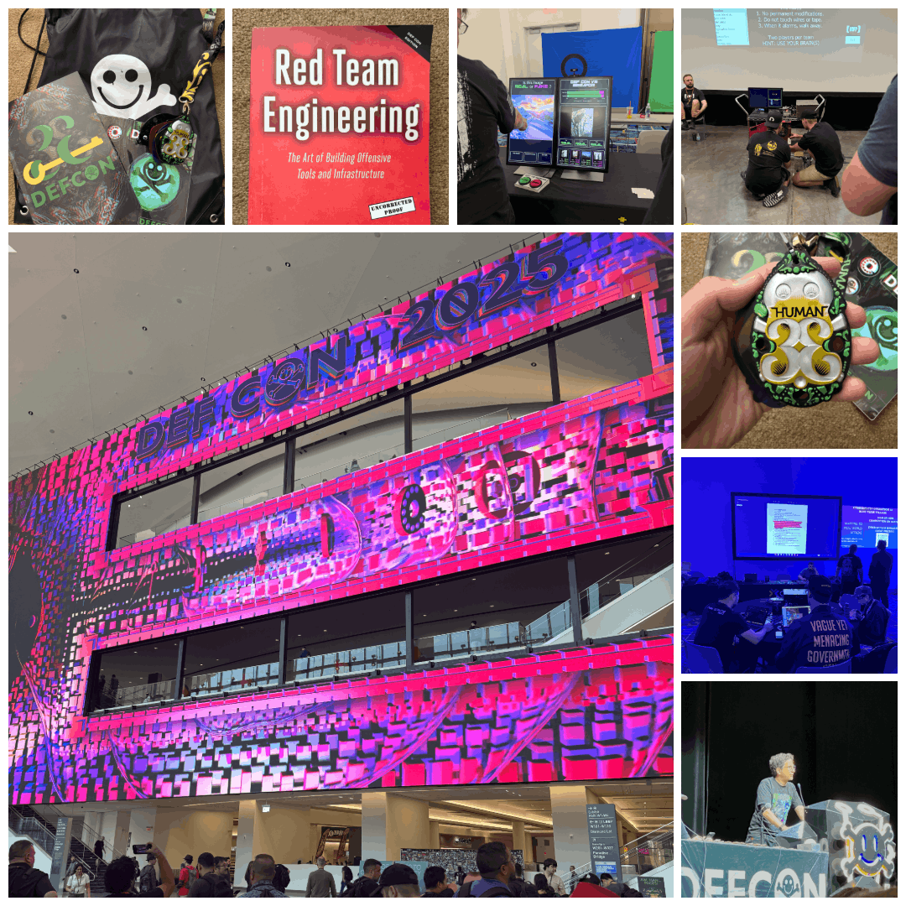

DEF CON 33

This was my first DEF CON. My first time stepping into the Las Vegas Convention Center's West Hall, surrounded by thousands of hackers, builders, and defenders. It felt like walking into a living lab. Villages, creator stages, hallway cons, lockpicks, soldering irons, and constant chatter. Every corner buzzed with people building, breaking, and teaching. Lines turned into conversations, and conversations turned into ideas. That mix of curiosity and generosity is what hooked me.
A Reminder of Why I Chose Security
Hacking as a craft. Instead of slides about trends, I saw working exploits, defensive playbooks, and real systems under test. Cars, clouds, hospitals, and airports. You do not just hear "attack surface"; you touch it.
Community as a multiplier. Mentors helped first-timers, village staff made space for questions, and strangers shared tools and failures without ego. It is hard to feel like an outsider when everyone nudges you to try the next thing.
Support that is real. Beyond talks, the how-to culture stood out. "Here is the repo," "Here is the dataset," "Here is how we validated it." The signal was not just what works, but how to reproduce it responsibly.
Key Insights
- AI in practice. AI-driven tools are starting to show real usefulness in security research and operations. They can surface vulnerabilities faster and assist with remediation, but they are far from plug-and-play. Human oversight, strong guardrails, and clear accountability remain non-negotiable.
- Identity and APIs. A recurring theme was how fragile authentication, over-permissioned accounts, and unchecked integrations create risk. With nearly every system exposing APIs, organizations need to map dependencies, tighten privileges, and monitor sensitive actions to keep the blast radius small.
- Secure by default. Many of the conversations highlighted that preventing entire categories of issues is more effective than chasing after them later. Examples include requiring phishing-resistant MFA, using memory-safe languages for new code, enforcing short-lived credentials, and adopting hardened configurations as standard.
- Resilience through realistic testing. The most impactful exercises were those that replicated real pressure. Crisis simulations, cloud misconfiguration labs, and OT or ICS scenarios highlighted the need to validate both technology and decision-making when systems are stressed.
- Supply chain integrity. With more reliance on open source and third-party software, securing the supply chain is a priority. Practices like SBOMs, signed builds, provenance checks, and continuous monitoring of dependencies are quickly becoming expected rather than optional.
- Data protection and governance. As automation and AI become more embedded, controlling how data is accessed, stored, and retained is critical. Least-privilege access, redaction where possible, scoped retention, and robust audit logging are key to maintaining trust.
- The human factor. Above all, the strength of this field comes from the community. Sharing tools and playbooks, mentoring newcomers, and turning hallway conversations into documented lessons are what make the knowledge at DEF CON carry forward.
Closing
Between the hands-on hacking, the generosity of the community, and the bias toward sharing how to do the work, DEF CON 33 reminded me why I love security. It is a craft you hone, with people who want you to get better, solving problems that actually matter.
Thank you to the organizers, goons, village crews, speakers, and the many folks who answered my rookie questions with patience. For a first-time attendee, it was unforgettable. It also gave me a roadmap for what to build, measure, and share next year.